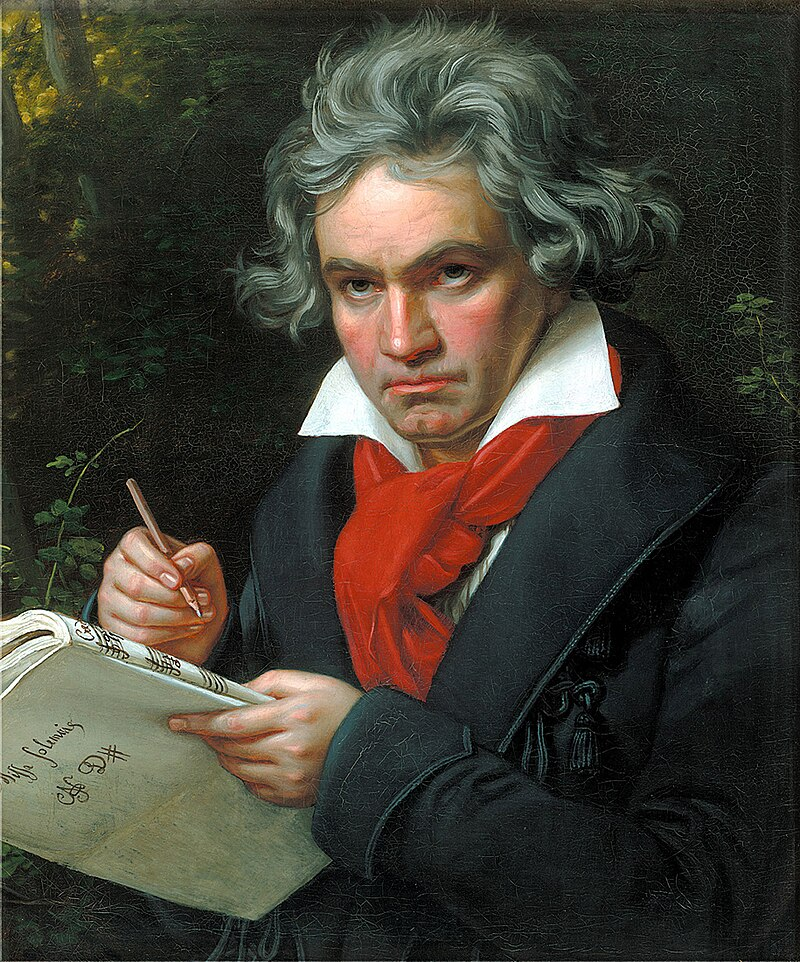
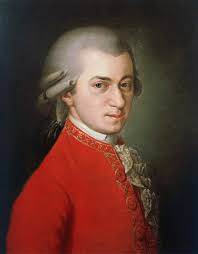
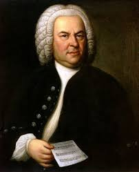
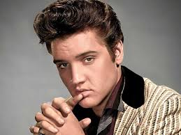
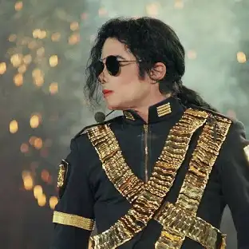
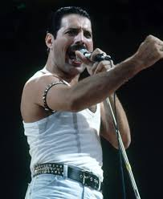
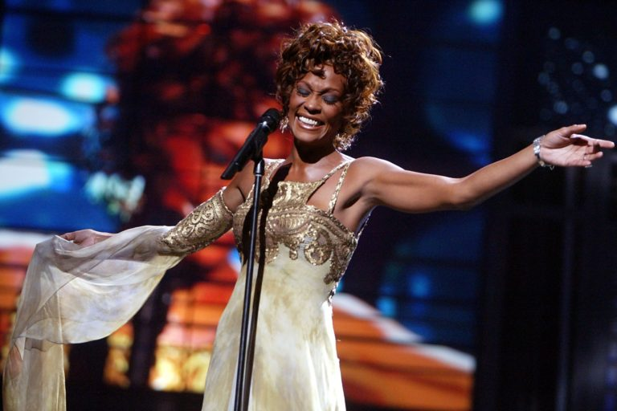
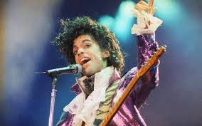

-
Ludwig van Beethoven
Considerado um dos compositores mais influentes de todos os tempos.
 -
Wolfgang Amadeus Mozart
Um prodígio musical, compôs mais de 600 obras.
 -
Johann Sebastian Bach
Mestre do contraponto e compositor barroco.
 -
The Beatles
Banda britânica que revolucionou o rock e a música popular.

-
Elvis Presley
O "Rei do Rock'n'Roll".
 -
Michael Jackson
O "Rei do Pop", famoso por suas músicas e coreografias.
 -
Freddie Mercury
Vocalista do Queen, conhecido por sua voz poderosa.
 -
Madonna
A "Rainha do Pop", famosa por sua reinvenção constante.
-
Whitney Houston
Uma das cantoras mais premiadas de todos os tempos.
 -
Prince
Multi-instrumentista e criador de um estilo único.
